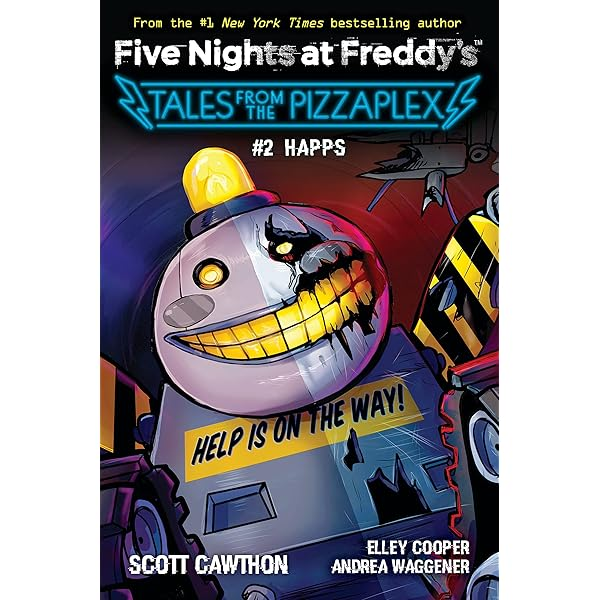

*The Mirror Around Us* é o segundo livro da coleção *Tales from the Pizzaplex*. Neste livro, a protagonista se vê envolvida em um jogo psicológico onde as distorções da realidade e os reflexos em espelhos se tornam uma ameaça real. A história explora temas de identidade e engano, com uma atmosfera de terror psicológico.
A personagem principal começa a notar estranhos comportamentos ao olhar para espelhos dentro da pizzaria, onde os reflexos não correspondem à realidade. À medida que ela investiga, mais mistérios e horrores surgem, levando a um confronto com uma entidade perigosa.